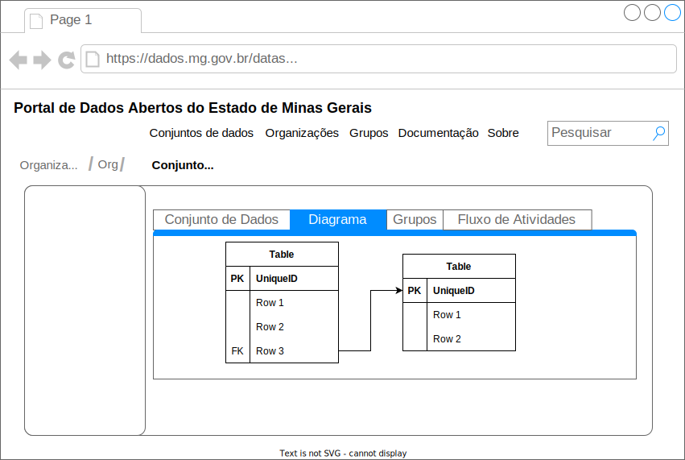

Diagramas
What
Diagrama interativo dos recursos (table schemas) de um pacote de dados. Devem ser representados no diagrama:
- Nomes dos campos (
fields.name) - Tipos dos campos (
fields.type(fields.format)) - Chaves primárias (
schema.primaryKey) - Chaves estrangeiras (
schema.foreignKeys) - Relacionamentos
No CKAN o diagrama deve estar localizado em uma aba própria na raiz do conjunto de dados.
Acceptance criteria
Se múltiplos recursos compartilham o mesmo table schema (após expansão e dereferenciamento) o diagrama deve apresentar apenas aqueles que são únicos, com indicação que existem outros.
O objetivo aqui é facilitar a compreensão da modelagem conceitual dos dados. Por exemplo, todos os 100+ recursos do conjunto remuneracao-servidores-ativos compartilham o mesmo table schema?
Informações adicionais (tooltip) dos campos (
fields.titleefields.description) devem ser exibidas quando o cursor do mouse passar em cima do mesmoInformações adicionais (tooltip) dos recursos (
resource.titleeresource.description) devem ser exibidas quando o cursos do mouse passar em cima do mesmoExportar para PDFExportar diagramas para SVGCustomização da visibilidade das colunas nos diagramas~~Interatividade entre diagramas e dicionários de dados (Clique redireciona para dicionário de dados relevante em nova página) ~~
Why
Facilitar a compreensão dos relacionamentos entre recursos por meio de uma representação visual/gráfica.
How
O diagrama deve ser implementado como um componente react frictionless antes de ser integrado ao CKAN e ao gerador de site estático.
Examples
Low-fidelity mockup

Other examples
O aspecto de interatividade é capturado no dbdiagram e Quick_DBD
https://dbdiagram.io/d
- Diagramas interativos ($diagrama)
- Tooltip para tabelas e colunas ($diagrama)
- Auto-arrange
-
- Diagrama com controle de visibilidade ($diagrama)
- Botão esquerdo com opções de foco “Hide this and parents” “Hide this and children” ($diagrama)
-
- Diagrama responsivo conectado a tabela associada ($diagrama)
-
- Focused Data Model ($diagrama)
- Hide non-key columns ($diagrama)
Oracle Data Modeler
- Select neighbors ($diagrama)
- Resize to visible ($diagrama)
Research
Feature suggestion: Export package to ER diagram #1118
The Tabular Data Package as the one source for data definition
OpenReferral already has a Tabular Data Package, an Entity Relation Diagram and an API. I think the second two are manually crafted from the first. I want an automated way of generating the second two (and more) from the first. […] Essentially I want one single machine-readable source defining a data standard from which I can generate ERD, schemas and human-readable documentation.
Open questions
- A visualização dos table schemas no lugar dos recursos resolve em alguns casos, como na da remuneração, a questão da igualdade lógica entre recursos diferentes. No entanto, para o caso bastante comum de partições com base em data (eg. ano), mesmo a utilização do table schema não vai funcionar pois eles podem ser diferentes (o table schema do dm_empenho_desp_2002, mas o ft_despesa_2002 é igual do dm_empenho_desp_2003, mas o ft_despesa_2002 é diferente de ft_despesa_2003 por causa das chaves estrangeiras). A utilização da funcionalidade de data in multiple files poderia ser uma solução, mas pode dificultar a manipulação e inspeção das validações.